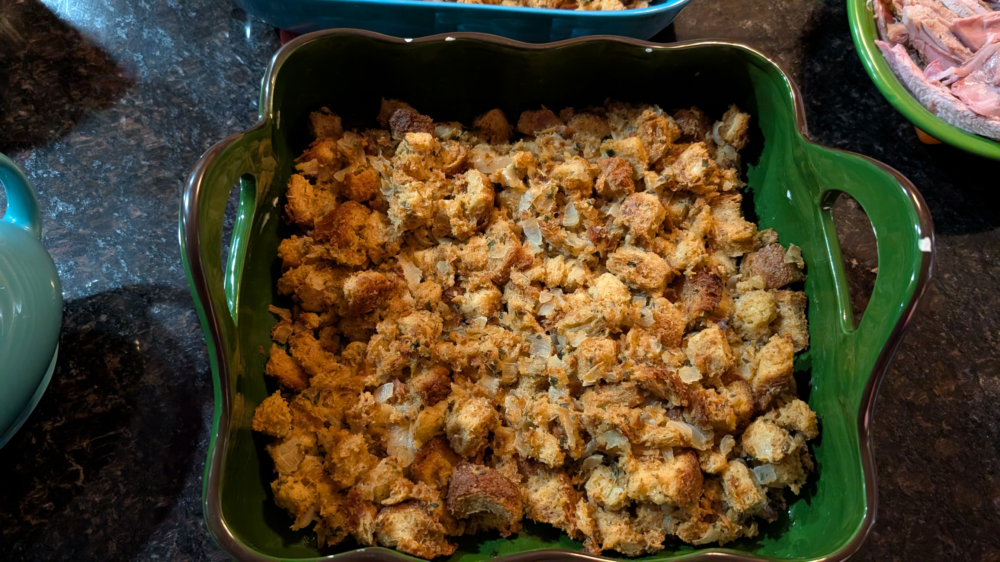

Stuffing
Prep Time: 35-45mins
Cook Time: 60 mins
Can't have a turkey without - depending on who you're talking to - the stuffing/dressing!
Tools
- 13x9 Baking Dish
Ingredients
- Spices & Herbs
- 10-12 Sage leaves or 1 Tbsp of dried sage
- 2-4 Parsley stalks or 1 Tbsp of dried parsley
- 2-3 Rosemary stalks or 1 Tbsp of dried rosemary
- 6 cloves of garlic or 3/4 tsp of garlic powder
- Salt and pepper for taste
- Vegetables & Other
- 2 large onions diced
- 4 celery stalks diced
- 2 large eggs
- 1 1/2 loaves of stale or toasted bread cubed
- 2 1/2 cups of vegetable stock
- 1 cup or (usually 2 sticks) of butter
Instructions
- Cubed Bread: you can cube the bread
and leave it overnight covered in the baking dish to make it stale,
or you can toast them in the oven at 350F for 15 minutes. Note: if you skip
this step, you will have a less desireable texture.
- StoveTop: Over medium heat, melt the butter in a large pan
and then stir in the onions with a pinch of salt. Wait till the onions are
translucent and browning before putting in the garlic. Cook the garlic until
the raw flavor is gone. Then add the celery. Cook the celery until softened
and then pour in 1 cup of stock. Stir the mixture, and remove from heat.
- Mixing Bowl: Whisk the 2 eggs until frothy, and then whisk in the
the remaining 1 1/2 cups of stock.
- Combining mixtures with bread crumbs: When cooled, pour the
stovetop mixture over the cubed bread in the baking dish. Mix around until
all the bread pieces are covered. Then pour the egg mixture on top and fold
the bread cubes over, careful not to break them.
- Oven: Preheat the oven to 350F and and bake the stuffing
for 45 to 50 mins.
Enjoy this vegetarian side with your feast!